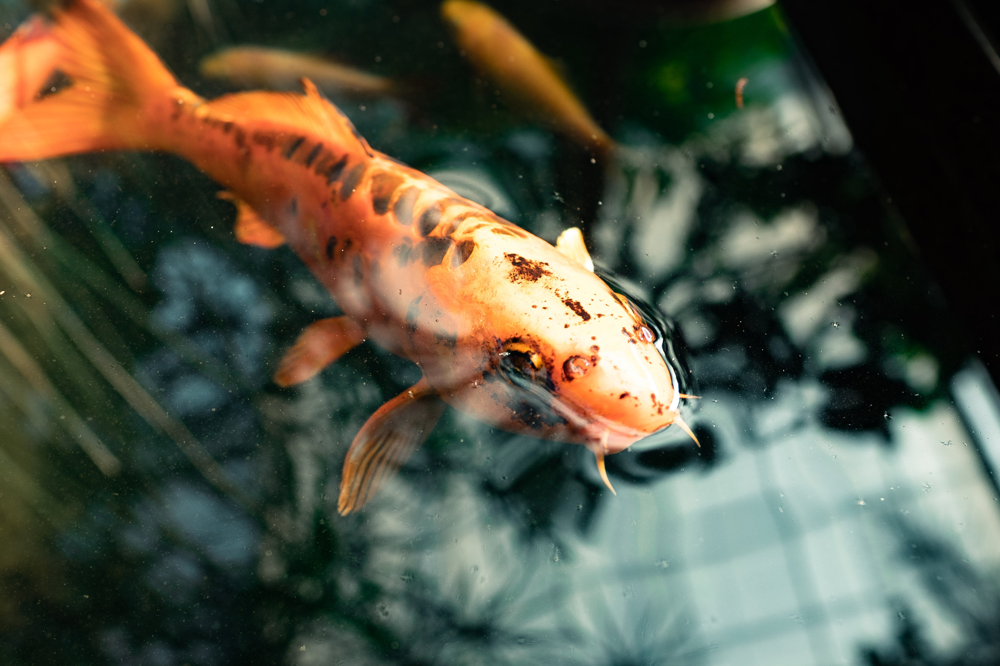

Home Page
Facts with food
Facts with swimming
Facts with where they live
Facts with how small to big they are
Fish range dramatically in size, from less than an inch long, like the dwarf anglerfish, to over 50 feet long, with the whale shark being the largest fish. The whale shark can weigh several tons, while some small gobies are only half an inch long as adults.
